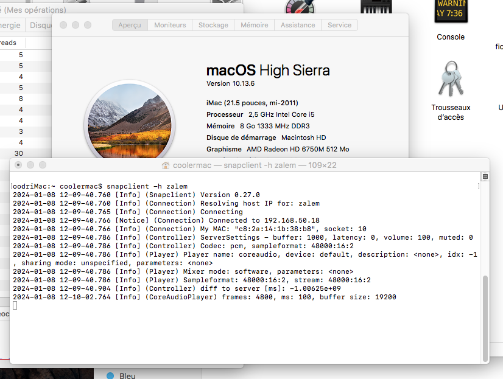
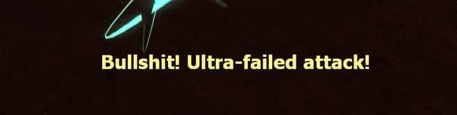

Happy New Year!
Here's a blogpost about fighting off bitrot so you can keep using those nice speakers your iMac ships with.
I recently got into setting up snapcast to play music from my NAS/MPD server across multiple rooms.
While a part of the deranged setup is finding a way to put MPD clients* in multiple rooms, I also need speakers that run snapclient to play the synchronized audio from.

I have an old Intel iMac running macOS High Sierra** , which is both not so old that compiling modern software on it is impossible... and old enough that it becomes kind of a pain. Let's suffer together!
...Or don't, you can just grab precompiled binaries for snapcast 0.27 here. It's on the house!
#include <filesystem> aka the clangening
Just running brew install snapcast on High Sierra will (currently) get you pretty far... but compiling the actual program will fail due to High Sierra's last official Apple C++ compiler not supporting C++17's std::filesystem.
You could seemingly make it work with <experimental/filesystem>, but I wasn't able to do it...
So let's just install a new compiler! I went with clang/llvm, like what's used on base macOS;
Just installing a newer version than the stock Apple one.
brew install llvm will fail, but I've found that installing the previous version works, so do brew install llvm@15.
Now, how do you tell Homebrew to use this compiler instead? I actually don't fucking know!
Apparently you can use HOMEBREW_CC and HOMEBREW_CXX to set C/C++ compilers...
But setting those variables to a path doesn't work, and setting them to clang/clang++ just makes Homebrew keep using the default Apple compiler. (AppleClang 10.0.0.10001044)
I couldn't install gcc on High Sierra, so.. let's just start hacking at the snapcast formula instead*** !
You can override compilers at the cmake level by using the properties -DCMAKE_C_COMPILER and -DCMAKE_CXX_COMPILER.
Atomic bullshit
Modifying the formula's cmake call to be
system "cmake", "-S", ".", "-B", "build", *std_cmake_args, "-DCMAKE_C_COMPILER=/usr/local/opt/llvm@15/bin/clang", "-DCMAKE_CXX_COMPILER=/usr/local/opt/llvm@15/bin/clang++"
uses our new compiler correctly, but then a new error rises...
Host compiler appears to require libatomic, but cannot find it.
That one is actually pretty easy and seems to just stem from llvm really wanting libatomic, even though it's not needed for our spectacular snapcast shenanigans at all.
Soo, what's one more argument to the cmake line, right? "-DHAVE_CXX_ATOMICS_WITHOUT_LIB=TRUE" sidesteps this problem.
Are we done? No!

After all that, I was encountering some final missing headers for basic C++ libraries, like <string.h>.
But I'd followed the brew instructions to set my lib/include paths properly...
To use the bundled libc++ please add the following LDFLAGS:
LDFLAGS="-L/usr/local/opt/llvm@15/lib/c++ -Wl,-rpath,/usr/local/opt/llvm@15/lib/c++"
For compilers to find llvm@15 you may need to set:
export CPPFLAGS="-I/usr/local/opt/llvm@15/include"
Well, they're actually incorrect! Your include should be "-I/usr/local/opt/llvm@15/include/c++/v1" instead. Thanks for nothing.
So with just a compiler swap and those three lines in your snapcast formula:
def install
# Use brew llvm
ENV["CXXFLAGS"]="-I/usr/local/opt/llvm@15/include/c++/v1"
ENV["LDFLAGS"]="-L/usr/local/opt/llvm@15/lib/c++ -Wl,-rpath,/usr/local/opt/llvm@15/lib/c++"
# Hijack compiler path directly in cmake call
system "cmake", "-S", ".", "-B", "build", *std_cmake_args, "-DHAVE_CXX_ATOMICS_WITHOUT_LIB=TRUE", "-DCMAKE_C_COMPILER=/usr/local/opt/llvm@15/bin/clang", "-DCMAKE_CXX_COMPILER=/usr/local/opt/llvm@15/bin/clang++"
# Rest of the formula proceeds as usual
system "cmake", "--build", "build"
You should be able to build snapcast on High Sierra.
Nothing like some brew bullshit to start off the year.
* I'm of course using Stylophone by yours truly, but also Persephone for macOS, MALP for Android, and even a bit of ncmpcpp!
** I can already hear the wails of "whyyy aren't you putting linux on it it's just x86": I actually use the machine occasionally for 32bit mac software! Also, the Brooklyn screensaver is really neat and I like having it in my living room.
*** I initially tried compiling snapcast 0.26, but that doesn't work with the boost lib provided by brew, so make sure to use 0.27.